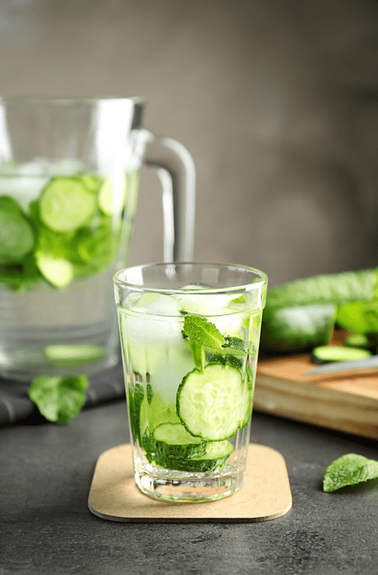

#1 – How to START the Transition (a reminder to all)

Your point of entry into eating a healthy diet is going to be different from literally everyone else. We all come from different backgrounds that have led us up to this point. How we got here doesn’t matter; the main thing is you are HERE.
With the Snickers candy bar wrappers behind us, we can move forward. Below, I am going to share some basic thoughts for you to “chew” on. Refer back to them as needed, and never be afraid to reach out to me for support and guidance.
Know that it’s a process!
For some, shifting gears in life isn’t so easy, especially when it comes to changing our eating habits. Not only are we connected to food through flavor, but also emotionally, socially, and mentally.
It’s not uncommon to have a memory attached to almost every food we eat. I get it. I am just like you. When you’re embarking on a new way of eating, you may feel like you’re losing part of yourself – your history, your story, your pleasure! That doesn’t have to be the case.
Don’t get me wrong; we still want to ditch those over-processed, nutrient-void foods, regardless of the memory attached to them. But we can take just about any non-healthy dish and replicate it in a healthy version. And you know what? You just might find the new version even more flavorful.
Sometimes the emotional bond far exceeds the taste buds, so it’s not uncommon for our childhood comfort foods to not only be void of nutrients but also flavor. I grew up eating Totino’s Cheese Pizza. I remember paying fifty cents for a whole frozen pizza! That alone speaks of the quality of nutrients. (shudders)
So what if we can make this transition to eating healthy a pleasurable one? What if we can restore those old memories and yet create new ones at the same time? Trust me it can be done. It’s just going to take a little (or maybe a lot) of fine-tuning, but don’t forget… I am here to help you along the way. In the meantime, I want you to work on the following…

Be kind to yourself
“You are one of a kind… eat accordingly.”
Be kind to yourself… it sounds simple, but how often do we administer self-care, let alone self-love? We know what it means to love another person unconditionally, but how can we do that if we don’t start at home, in our temple, in our body? I’m already encouraged because the very fact that you’re “here” reading this means you’re making a conscious decision to create a positive change for yourself.
It’s important to note that as your diet changes, not only will your body go through a cleansing process, but so will your emotions. As you experience these shifts, acknowledge them, work through them, let them go, and give thanks. Stuffing your emotions back down is like stuffing your belly full of nutrient-void food (Totino’s Pizza?). Let’s learn to let go of nutrient-void emotions.
I’m not here to paint a rosy picture and tell you everything will be just ducky. Truth be told, you will face challenges, cravings, and you are going to slip. That’s ok; you’re human.
Pick yourself up, dust off the potato chip crumbs, and forgive yourself. Obsessing and beating yourself up over unhealthy eating isn’t going to inspire you to want to change. It will, in fact, cause you to continue to fail and lose confidence that you have the will and power within to do this.
Create a Support System
“When we support each other, wonderful things can happen.”
Enlist the support of friends, family members, and like-minded people to help you navigate this process. Not only is it more fun, but they’ll be there to help you stay on track. An accountability buddy is priceless, so hook up with someone who has your best interests at heart. And vice versa.
Even though you may be just starting out, the fact that you are there for someone to be accountable to will give you strength in return. If you don’t know anybody locally that you can buddy up with, join our
private Facebook group and ask for support, ask for someone to be your accountability buddy. I have personally done this when trying to cut out sugars. Trust me, it helps, and you just never know what type of friendships will be formed.
Start where you are, never Compare
“Start where you are. Use what you have. Do what you can.”
This isn’t a race where we all start at the same starting point. When it comes to changing up our eating habits, I may start at one end of the spectrum, whereas you may be at the opposite end of the continuum from where I began. Or perhaps you land somewhere in the middle… the point is that it doesn’t matter. Everyone’s transition is going to look different… the point is that you start and trust me as your health continues to evolve, so will your diet.
Eliminate Refined & Processed Foods
This is perhaps the single most beneficial thing you can do for your health. The chemicals and preservatives used in foods these days can wreak havoc on our overall well-being. If you don’t think so, try quitting ALL sugars for three days and see how it affects you overall.
I’m sure by now that you’ve heard that “food is thy medicine”… food heals.” These statements are correct, but the other side of the coin is true too. Food (processed chemicals) can poison us, weaken our bodies so that disease can enter. So never underestimate the power of food. Processed and unprocessed!
Learning how to prepare whole, fresh foods (cooked or raw) is almost like stepping back in time. The time when our grandparents and great-grandparents used to make all their food from scratch. And not necessarily because they wanted to, but had to. Fast food has taken on a whole new meaning. Drive-through windows, microwavable dishes, grab-and-go deli’s. Who can beat that convenience? Want fast food? Try an orange. It even comes in its own wrapper. You will be amazed by how much your taste buds will shift and how simple foods can become the new “gourmet.”
In my twenties, my mom and I loved to hit the garage sales. We could hardly wait for Saturday morning to arrive. As we motored down the road, keeping our eyes peeled for signs, we knew we had one stop to make before we could go treasure picking. The 7-11 gas station. With a Big Gulp, filled with Pepsi, (523 calories and 35 teaspoons of sugar, that’s 140 grams of sugar!!!) in one hand and a huge sugar cookie with pink frosting and sprinkles (wrapped in cellophane to ensure freshness for the next two years) in the other hand… we could then get serious about the day’s events. This was my diet.
Fast forward twenty years or so, my mother and I STILL enjoy filling our Saturdays with treasure-seeking thrills. The only difference was our snack habits have changed. Well, mine did. Mom and I would swing by the grocery store (we no longer went to convenience stores), where Mom would head in one direction for her sugary snack, and I would find myself in the produce section.
After selecting our treats, we would meet back up at the checkout lanes to pay for our goodies. There stood Mom with a Pepsi and a Reese’s candy bar, and there I stood with a head of romaine lettuce. (Yes, we laughed.) After a few years of healthy eating, my body got to the point of craving the fresh crispness of fruits and veggies. If you had told this to me in my twenties as I held my pink frosted cookie, I would have laughed you silly. So, yea, things can and do change.
Clean Out Your Pantry
“A cluttered space is a cluttered mind.”
To eliminate processed foods from your diet, you also need to remove them from your pantry, fridge, and freezer. And don’t forget that stash that you hid behind the row of canned peas. How you proceed with this task is up to you. There are many things to take into consideration, family and where you are on this journey. If your family is going to come on board with you… it may be easier to REALLY clean “house,” but I would suggest that you are well prepared for this step. If you don’t know what to replenish your pantry with or how to prepare (raw or cooked) whole foods, you will start off on the wrong foot, and you will be surrounded by hangry people.
Take it One Recipe at a Time
“Be not afraid of growing slowly, be only afraid of standing still.”
I like to joke around with my husband, saying that I am changing the world one recipe at a time. One of the reasons that many people give up on new goals is that they try to make too big of a change too quickly. When thinking about making your diet healthier, start small. Think about adding new foods to your repertoire rather than taking familiar foods away. It’s time to reframe how we look at our plates. The more whole foods you add to your plate, the less room you will have for those refined, processed foods. I know what you are thinking, and the answer is, “No, you can’t go out and buy larger plates.” I am on to you.
I am going to stop there for now. I hope these ideas prompt you to think deeply as you start your journey. Just remember, there is NO wrong time to start the transition towards a healthier life. blessings, amie sue
© AmieSue.com